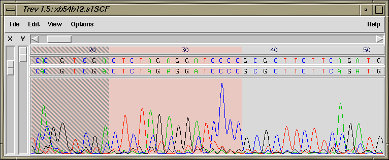
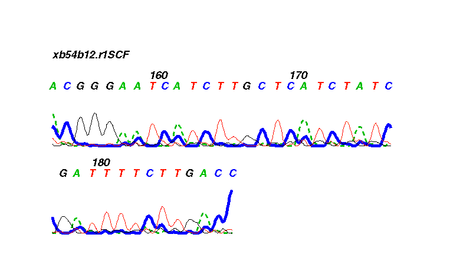

Copyright (C) 1999-2002, Medical Research Council, Laboratory of Molecular Biology. Made available under the standard BSD licence.
@vskip4pt @hrule height 0.2pt width @hsize @vskip4pt
Copyright (C) 2002-2006, Genome Research Limited (GRL). Made available under the standard BSD licence.
@vskip4pt @hrule height 0.2pt width @hsize @vskip4pt
Portions of this code are derived from a modified Primer3 library. This bears the following copyright notice:
Copyright (C) 1996,1997,1998 Whitehead Institute for Biomedical Research. All rights reserved.
Redistribution and use in source and binary forms, with or without modification, are permitted provided that the following conditions are met:
1. Redistributions must reproduce the above copyright notice, this list of conditions and the following disclaimer in the documentation and/or other materials provided with the distribution. Redistributions of source code must also reproduce this information in the source code itself.
2. If the program is modified, redistributions must include a notice (in the same places as above) indicating that the redistributed program is not identical to the version distributed by Whitehead Institute.
3. All advertising materials mentioning features or use of this software must display the following acknowledgment: This product includes software developed by the Whitehead Institute for Biomedical Research.
4. The name of the Whitehead Institute may not be used to endorse or promote products derived from this software without specific prior written permission.
We also request that use of this software be cited in publications as
Steve Rozen, Helen J. Skaletsky (1996,1997,1998) Primer3. Code available at http://www-genome.wi.mit.edu/genome_software/other/primer3.html
THIS SOFTWARE IS PROVIDED BY THE WHITEHEAD INSTITUTE "AS IS" AND ANY EXPRESS OR IMPLIED WARRANTIES, INCLUDING, BUT NOT LIMITED TO, THE IMPLIED WARRANTIES OF MERCHANTABILITY AND FITNESS FOR A PARTICULAR PURPOSE ARE DISCLAIMED. IN NO EVENT SHALL THE WHITEHEAD INSTITUTE BE LIABLE FOR ANY DIRECT, INDIRECT, INCIDENTAL, SPECIAL, EXEMPLARY, OR CONSEQUENTIAL DAMAGES (INCLUDING, BUT NOT LIMITED TO, PROCUREMENT OF SUBSTITUTE GOODS OR SERVICES; LOSS OF USE, DATA, OR PROFITS; OR BUSINESS INTERRUPTION) HOWEVER CAUSED AND ON ANY THEORY OF LIABILITY, WHETHER IN CONTRACT, STRICT LIABILITY, OR TORT (INCLUDING NEGLIGENCE OR OTHERWISE) ARISING IN ANY WAY OUT OF THE USE OF THIS SOFTWARE, EVEN IF ADVISED OF THE POSSIBILITY OF SUCH DAMAGE.
@vskip4pt @hrule height 0.2pt width @hsize @vskip4pt
Permission is given to duplicate this manual in both paper and electronic forms.
For some types of sequencing project it is convenient to view and edit the chromatogram data prior to assembly into a gap4 database (see section Gap4 Introduction), and this is the function of the program trev.
Trev displays the original trace data, its base calls and confidence values, and it allows the sequence of the trace to be edited and the left and right cutoffs to be defined. Several file formats can be read in addition to our own Experiment Files (see section Experiment File), and 'SCF' files (see section scf). Any edits made are normally saved to Experiment files, not to the chromatogram files which we regard as archival data.
A typical display from trev is shown below. It includes the trace data, the original sequence, the edited sequence, the menu bar, and the name of the sequence being edited. The left cutoff region is shown shaded.

The trace can be scrolled using the scrollbar directly beneath the menubar. The trace can be magnified in the vertical and horizontal directions using the scale bars to the left of the trace.
The base numbers, original sequence, edited sequence, confidence values and the trace can each be switched on or off, and the font for the original and edited sequence is selectable.
The figure below shows the bases, edited bases, a histogram of the confidence values, the traces, and the Information Window which can be switched on from the View Menu.
Trev uses "io_lib" for handling the various sequencing instrument
file formats. This means it has support for ABI, MegaBace (when saved
in ABI format), SCF (used by LiCor and some other manufacturers), ZTR
and SFF (454).
The above pictures all come from instruments using the Sanger
sequencing method, however more recently support has been added for
pyrosequencing methods (as used by 454 Life Sciences amongst
others). An example of this is below.
Trev can be used to produce postscript
files of the traces so that they can be printed. The colours, line
widths, etc are configurable. An example is shown in the figure below.

Note that we strongly
recommend that readings are not edited prior to assembly as it is far better
to edit them when their alignment with other readings can be seen.
![[picture]](trev_conf_trace,6in.png.html)
(Click for full size image)
![[picture]](trev_pyro_trace,6in.png.html)
(Click for full size image)
Last generated on 25 April 2016.